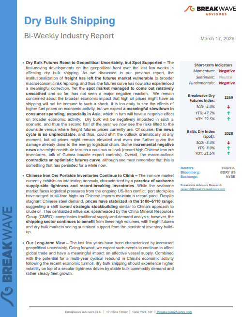
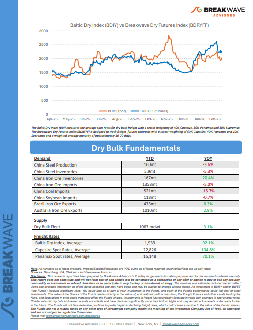
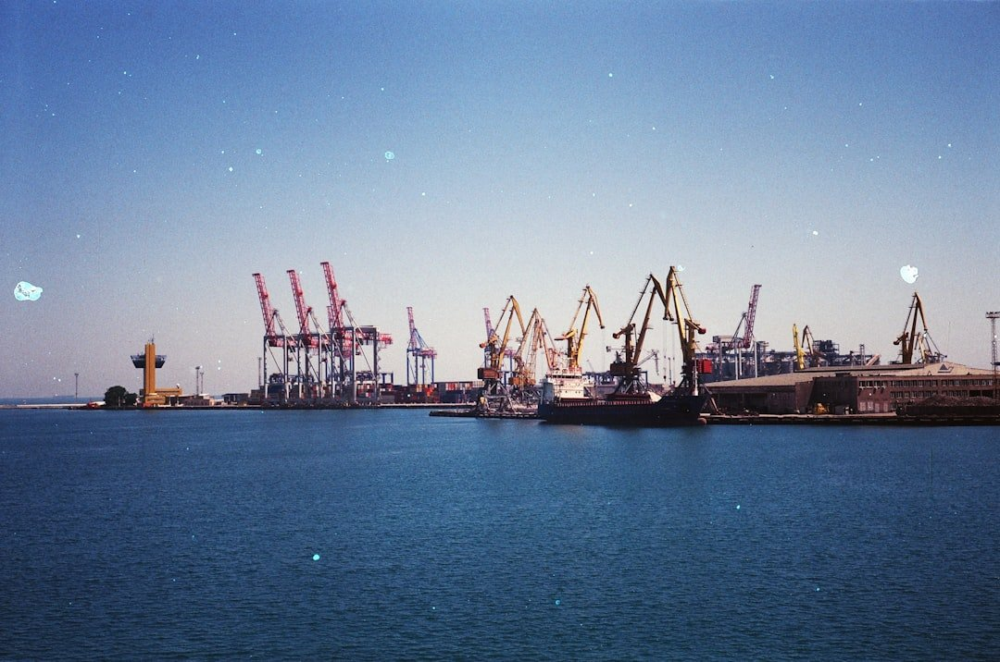

Welcome toBreakwave AdvisorsWeekend Read
As the week comes to a close, take a moment to review the key insights from the past few days. Missed something? We've gathered all the top insights for you to catch up at your convenience.
Breakwave Shipping Report
Dry Bulk Futures React to Geopolitical Uncertainty, but Spot Supported– The fast-moving developments on the geopolitical front over the last few weeks is affecting dry bulk shipping.


Insights Of The Week
The dry bulk market began 2026 with considerable momentum

The crisis in the Middle East shows no signs of abating.
Gibson Tanker Market Report
Oil Spike Challenges Dry Bulk Fuel Equation
The Middle Eastern Conflict has triggered wild swings in oil and marine fuel prices.
BRS Weekly Dry Bulk Newsletter

The conflict in the Arabian Gulf has rapidly evolved from a geopolitical shock into a structural disruption for global energy logistics, forcing the oil market and the tanker industry to adjust in real time.
Xclusiv Shipbrokers Weekly Report
Crude-Laden Tankers Build in Hormuz as Production Cuts Loom
Record crude accumulation and a historic shift in ballast–laden ratios signal deepening supply disruption in the Gulf.
Signal Ocean Market Insights
Bauxite Trade
Recent developments in the Guinea bauxite trade are introducing a more complex outlook for the Capesize segment..
Intermodal Weekly Market Report
Private Credit: Still quite far from a 2008-event
Private Credit becoming a systemic risk capable of destabilising broader asset classes is not a central scenario, however, it warrants close monitoring.
Forvis Mazars Weekly Note
The puzzle of low Middle East Gulf oil storage levels
Many expect crude storage levels in the Middle East Gulf to reach tank tops - but do they? And should they?
Vortexa Freight Weekly
Dry Bulk Spot Chartering Activity Falls Back Down To Earth
It remains to be seen what comes next with the war in Iran and related dry bulk spot chartering activity.
From Commodore's Weekly Dry Bulk Reports
U.S. Leads Brazil in Corn Exports to China
Chinese corn imports declined to approximately 3.8M mt in 2025, down from 8.4M mt in 2024. Of this, around 2.5M mt originated from Brazil..
Signal Ocean Dry Weekly Market Monitor